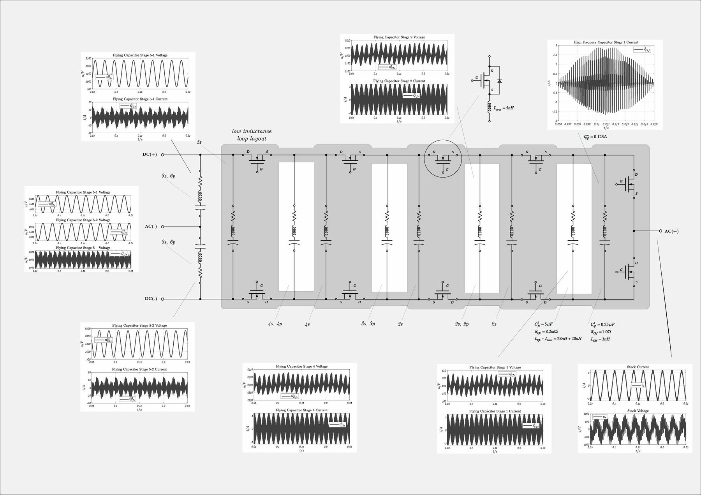
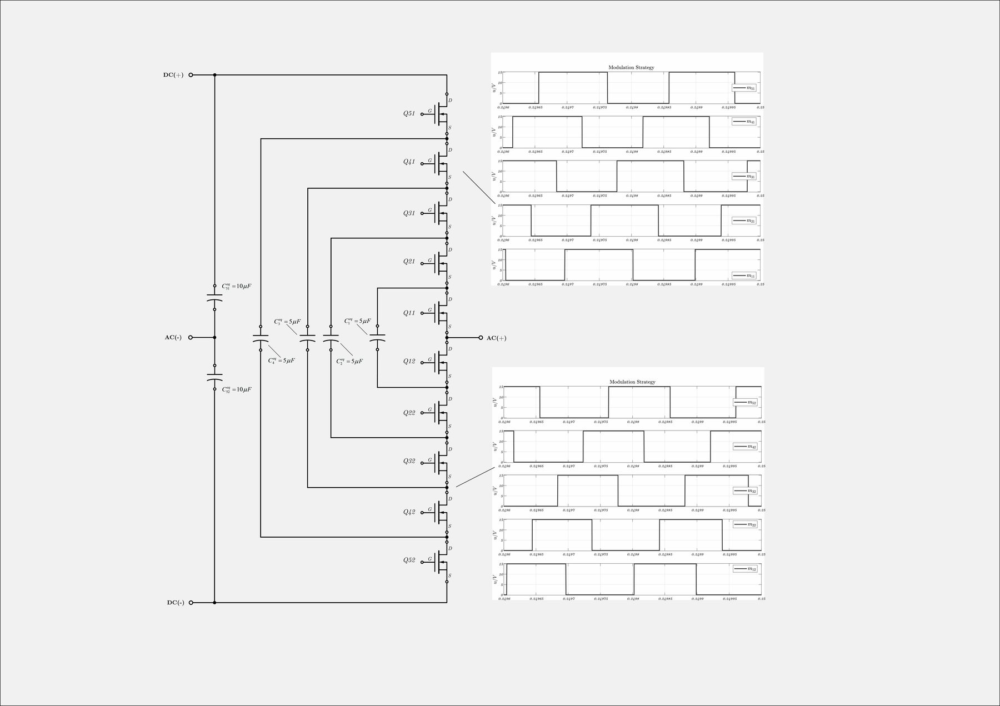
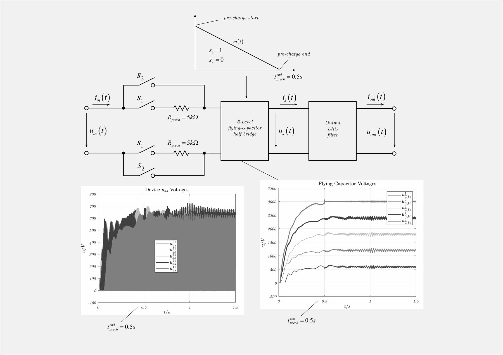

Flying-capacitor multilevel inverter
Single-phase flying-capacitor multilevel half-bridge with output filter: pre-charge sequence, phase-shifted modulation and capacitor-voltage balancing studied in simulation.

What it is
A flying-capacitor multilevel inverter builds a multi-step output voltage from a single DC link by inserting or bypassing capacitors that float between the switch pairs. Each device only blocks a fraction of the DC-link voltage, the output has more levels than a two-level bridge and the effective switching frequency seen by the filter is multiplied by the number of cells.
This study looks at a single-phase half-bridge with an output LC filter: how the flying capacitors are charged before the inverter can start, how the phase-shifted carriers keep their voltages balanced, and what the output looks like when it is done properly.
What the note covers
- Pre-charge sequence with series resistors and its timing.
- Phase-shifted modulation of the cells and natural balancing of the capacitor voltages.
- Device voltage stress and output-filter behaviour, from the simulation.
Figures

